Map Tiles for Really Big Images
Table of Contents
- Introduction
- Imagery
- Map tiling
- Behind the scenes
- Tiling software
- Map tiles illustrated
- How much zoom?
- Vector tiles
- Summary
- Appendix
Terms: imagery, scene, footprint, mosaic, map tiling, zoom level, map scale, vector tiles
Introduction
In our assignments so far, we have added various layers to our maps from web services, some with the backdrop of a satellite basemap, but we have given little attention to the basemaps themselves. What kind of web service is the satellite basemap, and where does the data come from?
Satellite images have become a staple of web maps, providing a bird’s-eye view of the landscape and a backdrop for streets and other features. They help the audience connect abstract representations like points, lines, and polygons to the real surface of the planet, showing familiar details such as trees and buildings.
However, the large file sizes that are typical of this imagery make it difficult to transmit across the Internet quickly, presenting a challenge for web map makers.
Most or all of the web maps you have seen probably used a trick called map tiling to display imagery or basemaps without requiring a huge download and slow loading times. This lesson will get into the details of map tiling to show how terabytes of imagery can quickly be served to your audience’s screens.
Imagery
Imagery is a general term for data collected by satellites and aircraft depicting Earth’s surface. Sensors onboard these craft capture data in individual images called scenes. The scenes cover an area of the ground known as the footprint. Low-resolution images usually have a large footprint covering a wide area, while high-resolution images have a smaller footprint.
 Figure 1. Animation of the path of the Landsat 8 satellite as it orbits the planet and captures scenes. Derived from NASA Goddard Media Studios “LDCM Overview“.
Figure 1. Animation of the path of the Landsat 8 satellite as it orbits the planet and captures scenes. Derived from NASA Goddard Media Studios “LDCM Overview“.
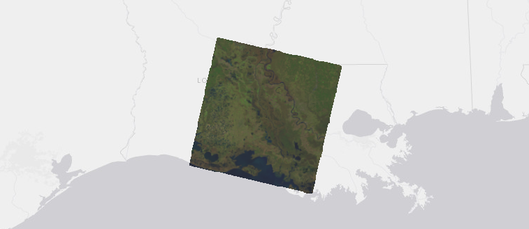 Figure 2. A single Landsat scene covering part of Louisiana.
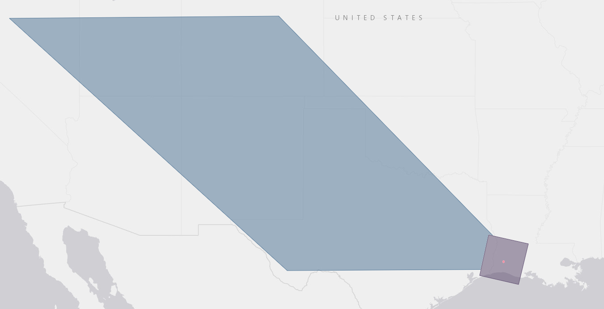 Figure 3. Comparison of the footprints of scenes acquired by satellite and aircraft. The large blue area is an image footprint from the MODIS sensor onboard the Terra satellite (1 MODIS pixel = 500 meters), the purple square is a Landsat 8 footprint (1 Landsat pixel = 30 meters), and the small red spot is a scene from the National Agriculture Imagery Program (NAIP) 2019 dataset captured by airplane (1 NAIP pixel = 1 meter).
Multiple images can be stitched together to create a single mosaic of an area. When you see a satellite view of a state, country, continent, or the world, you are being shown a mosaic consisting of dozens or thousands of images patched together to look like a coherent image.
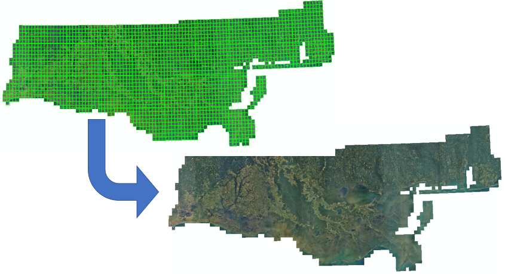 Figure 4. Aerial images combined into a mosaic of coastal Louisiana, Mississippi, and Alabama. The mosaic consists of 2,406 images captured by airplane in 2008. The top image shows the individual image footprints bordered in green, and the bottom image shows the final mosaic produced by GIS software.
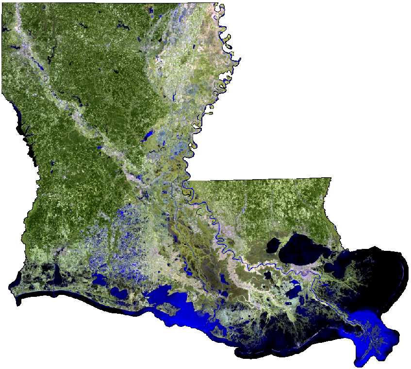 Figure 5. Mosaic made from 14 Landsat images combined and clipped to cover the state of Louisiana in 2014. It is a false-color image made from Landsat bands outside of the visible spectrum. See the tile layer.
Imagery presents a problem for web mapping because of large file sizes and the difficulty browsers can have with displaying very large images. The Landsat 8 satellite captures around 740 images per day, taking 16 days to image the entire planet, and each image can be over 1 GB (and over 6,000 pixels wide). On a more local level, uncompressed aerial imagery of the state of Louisiana captured for the National Agriculture Imagery Program in 2017 is about 650 GB (1-meter resolution). Higher resolution imagery—the kind you see on Google Maps when zoomed in all the way—can be expected to reach multiple terabytes for a small state like Louisiana.
Yet when you view an imagery basemap on Google Maps or ArcGIS Online, your browser is able to load the images quickly as you pan and zoom, even at the global scale. This is possible because of tiling.
Map Tiling
Map tiling is the process of dividing large images into small square images, or tiles, that can be quickly sent over the Internet to a client web map application, which reassembles the tiles into a map to display on screen.
In short, a large image or mosaic is loaded into tiling software, split into numerous very small square images (tiles), and those images are stored online to be made available through a web GIS application or web service, such as an OGC Web Map Tile Service (WMTS) or an ArcGIS tile layer. A different set of tiles is created for each zoom level, so that when zoomed out, users only download low-detail tiles covering a large geographic area, and when zoomed in, they only download high-detail tiles covering a small geographic area.
A zoom level is a representation of a map at different scales, with more detail at higher zoom levels, bringing the user’s view “closer” to the map as the zoom level increases. The map scale is the ratio between a distance on a map and distance on the ground. A map scale of 1:1,000 means that one centimeter on the map is equal to 1,000 cm on the ground, which is a high zoom only useful with very high-resolution imagery. A map scale of 1:100,000,000 means one centimeter on the map equals 100 million centimeters (1,000 km) on the ground, appropriate for showing a world map.
Furthermore, the tiles are compressed, which might cause loss of detail in the image but makes maps load even faster.
Therefore, when displaying imagery on a web map, it makes sense to use some form of tiling.
Behind the scenes
If you have ever used Google Maps over a slow Internet connection, you might have noticed the map loading one square tile at a time.
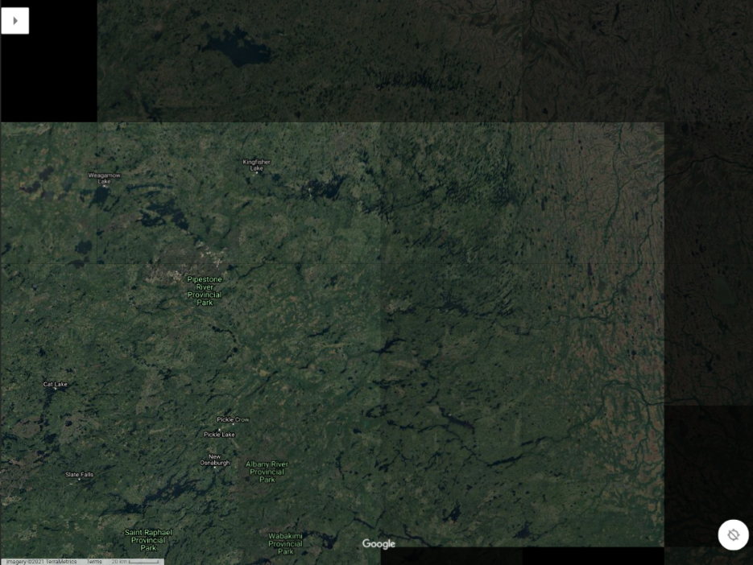 Figure 6. A screenshot of Google Maps taken before the view has finished loading, showing individual map tiles still being downloaded and assembled by the browser.
Your browser, the client, is loading the Google Maps webpage and requesting images (tiles) of the map, downloading them and displaying them on screen. We can use web developer tools to have a look behind the scenes.
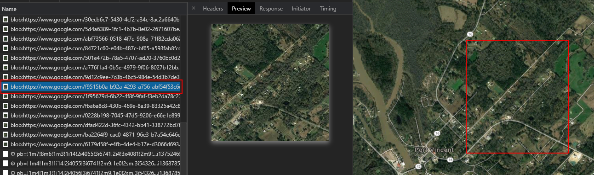 Figure 7. The developer tools in a browser can be used to show the individual map tiles being downloaded when you view a web map. This screenshot of the Chrome developer tools shows the URL of an individual map tile (left), the tile image preview (center), and an approximate outline of the tile’s location on the assembled map.
In Chrome you can press F12 on your keyboard to see the browser’s developer tools. Click the Network tab to see details about what the browser is downloading. Go to Google Maps and show the satellite basemap. The developer tools will show numerous resources being downloaded, but if you sort through the list you should be able to pick out some tiles. You might have to click the Clear icon near the top of the tools and then pan and zoom out to load new tiles.
The client web map only downloads the tiles that are needed for the current view instead of all the tiles in the basemap; if you are zoomed in on Louisiana, the browser will not download tiles for Alaska. When you pan the map to a new area or zoom in and out, a new set of tiles will be downloaded to show the new areas or details that were not visible before.
To speed things up further, map tiles are typically served in a compressed image format like JPEG to decrease the file size. This results in some loss of detail and makes tile layers unsuitable for analysis in GIS, but since basemaps are simply meant to be a visual aid for the audience, this is an acceptable compromise.
Tiling software
GIS software can automate the map tiling process by taking large images or mosaics as input and generating the set of compressed map tiles, known as a tile cache, for different zoom levels. Allowing greater zoom, i.e., showing more detail, will require more tiles. For example, at a zoom level where streets and large buildings become clearly visible, a tile cache for the state of Louisiana might contain 50,000 tiles. At the closest zoom level where the details of vehicles and houses are clear, a statewide tile cache for Louisiana could exceed 50,000,000 tiles.
ArcGIS Pro will be used in this course to generate tiles for ArcGIS Online, but numerous other applications exist for tiling maps and large images.
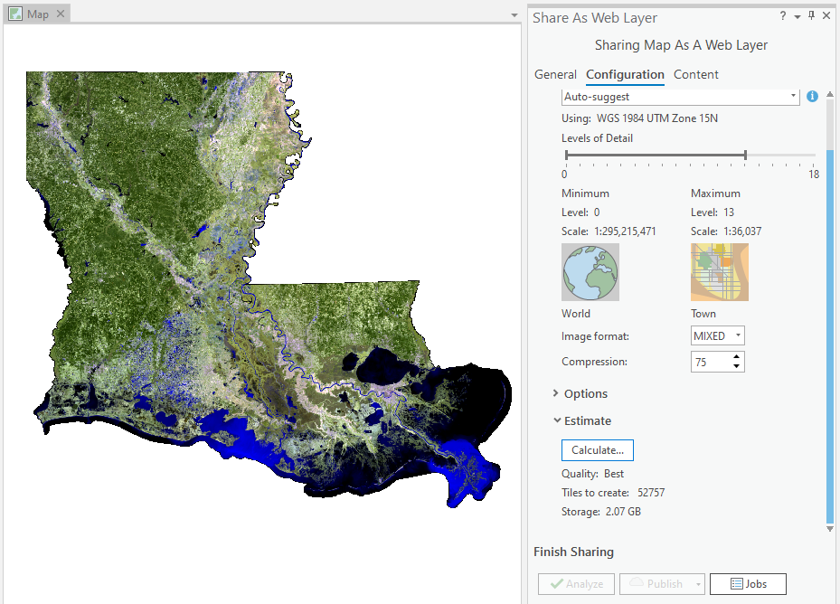 Figure 8. Options for generating a tile layer in ArcGIS Pro. The software takes a single image or image mosaic and generates tiles at different zoom levels. The settings here show that tiles will be generated down to zoom level 13, resulting in a total of 52,757 tiles.
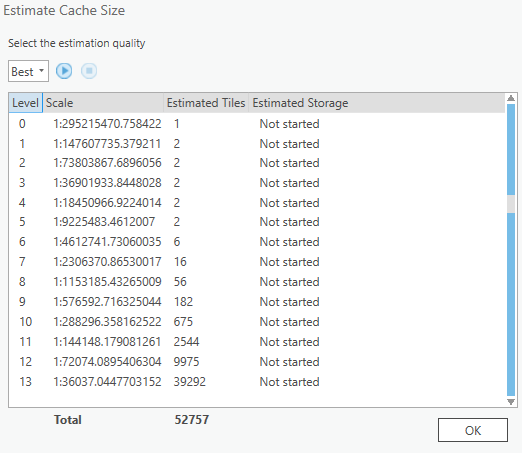 Figure 9. Estimates given by ArcGIS Pro for how many tiles will be generated for each zoom level. When zoomed out far, just a few tile images are needed. For close zoom levels showing high detail, many tiles are needed.
Map tiles illustrated
The following figures use a hypothetical web map showing the Gulf of Mexico region to demonstrate how different numbers of tiles are needed for different zoom levels:
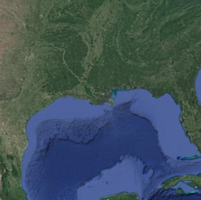
Let us say that our browser window is 512x512 pixels, and the size of each tile will be 256x256 pixels, a typical tile size:
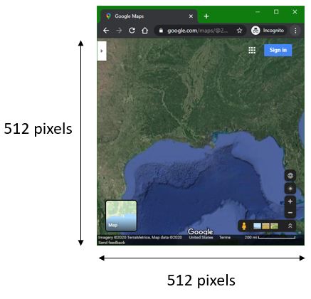
Zoomed out all the way out, the entire map can be shown on screen with four tiles (four 256x256 squares fit into a 512x512 square):
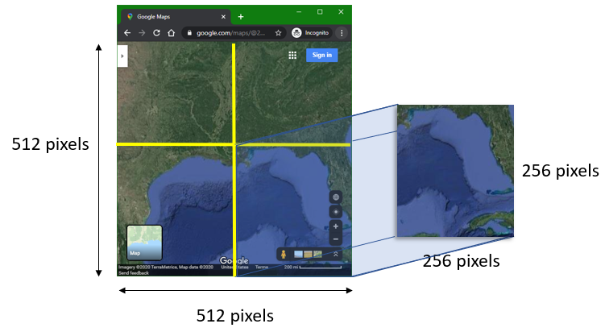
We will call this zoomed-out view Zoom level 0 (no zoom). When tiling software creates tiles, it organizes them not just by zoom level but by rows and columns. Like the zoom level, the counting starts at 0. Therefore, the first row is Row 0, and the first column is Col 0.
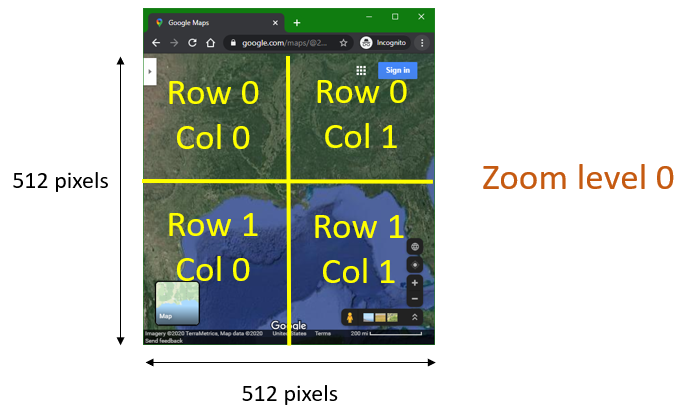
Now if we think of those four tiles as image files, we could name them according to their zoom, row, and column. Tiling software automatically creates files and folders for tiles, and it is typical to have a folder for each zoom level, and within each zoom-level folder there is a folder for each row, and then within each row folder there is a file for each column.
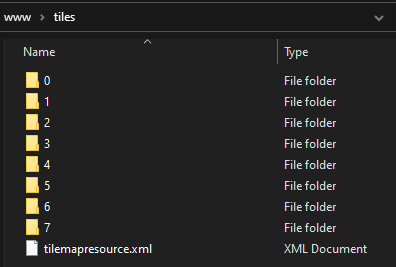 Figure 10. Folders on a web server hosting a tile cache. There is a folder for each of the eight zoom levels (counting starts at 0).
Since we so far have only Zoom level 0 with two rows and two columns, our files and folders in this tile cache would look like this:
0(zoom level folder)0(row folder)0.jpg(tile in first row, first column)1.jpg(tile in first row, second column)
1(row folder)0.jpg(tile in second row, first column)1.jpg(tile in second row, second column)
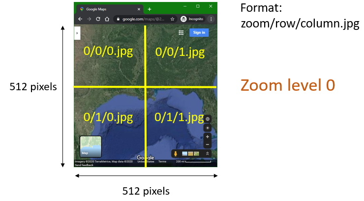
Now, say the user zooms in one level, to Zoom level 1. Their browser looks like this, showing a new set of tiles with different file names and a more zoomed-in view of the coast.
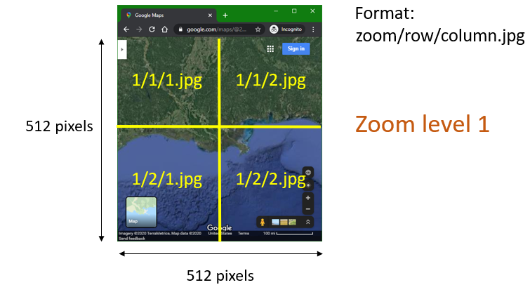
In the zoomed-in view, Louisiana appears larger on screen and we can no longer see the full extent of the original map, which included Florida, more of Texas, etc. Even though the user’s current view only shows 4 tiles, Zoom level 1 contains 16 tiles to cover the full extent of the original map in case the user pans the map.
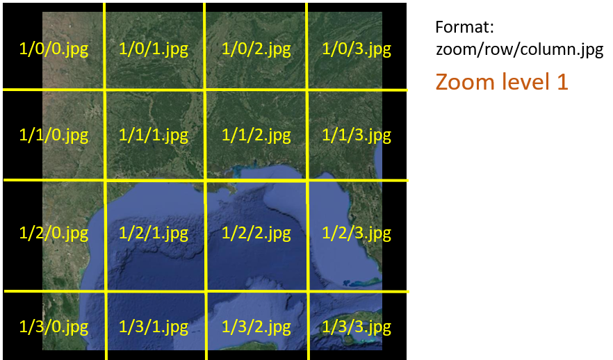
The figure below illustrates that only four tiles are downloaded and displayed on the user’s screen at this zoom level and position, but if the user panned the map directly east to Florida, for example, then the necessary additional tiles would be downloaded and displayed: 1/1/3.jpg and 1/2/3.jpg.
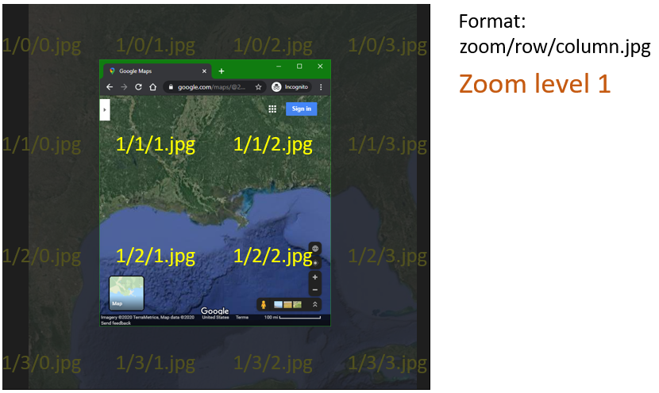
So Zoom level 0 contains 4 tiles, and Zoom level 1 contains 16, and if we told our software to generate yet another level, allowing users to zoom in even closer, then Zoom level 2 would contain 64 tiles.
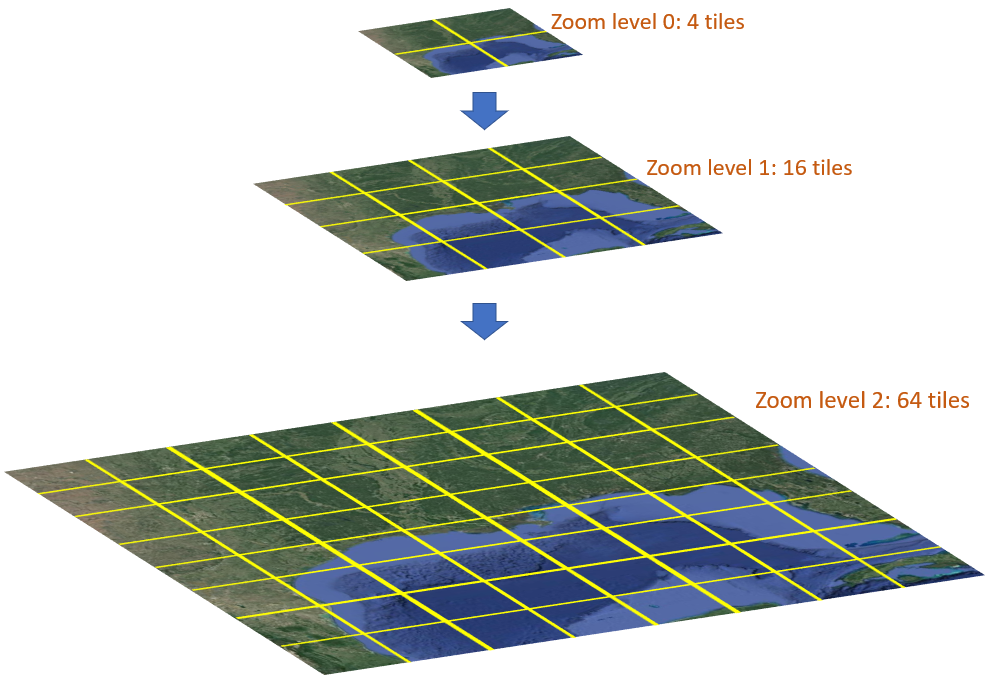
Again, the user’s 512x512-pixel screen would only display 4 of those 256x256-pixel tiles, but when they panned the map, more tiles would be downloaded and displayed.
How much zoom?
As shown in the figure above, at Zoom level 2, Louisiana is large enough on screen to take up most of the width (two tiles across), but no fine details like buildings and roads are visible. If we keep generating more tiles for additional zoom levels with more detail, the total tile count will grow to be enormous.
- Zoom level 3 tile count is 64 x 4 = 256
- Zoom level 4 tile count is 256 x 4 = 1,024
- Zoom level 5 tile count is 1,024 x 4 = 4,096
- Zoom level 6 tile count is 4,096 x 4 = 16,384
- …
- Zoom level 10 tile count is 1,048,576 * 4 = 4,194,304
If you were creating a tile cache layer of your own, how would you know how many zoom levels to generate?
One factor to consider is the resolution of the source image. Imagine that with our example image, once we zoom in to level 10, the image starts to look pixelated and no further detail can be discerned. There is no point in creating further zoom levels.
Another factor to consider is storage space and processing power. Tile images are files, and they will take up storage space on a server or cloud service. The benefits of giving your audience a closer zoom level must be weighed against the additional costs for your organization.
Similarly, the processing power needed to generate thousands or millions of tiles can cost time and money, and the costs and benefits must be considered. Storage and processing costs are more of a concern for tile caches of high-resolution imagery covering a wide area.
In contrast, the Landsat mosaic of Louisiana shown at the beginning of this lesson will not incur extreme costs because the resolution of Landsat imagery is not very high and it does not take much Landsat data to cover the state. Each pixel in a pansharpened Landsat scene is 15x15 meters, so objects smaller than about 50 feet, like cars, will not be visible no matter how far you zoom in, saving us from having to generate high zoom levels.
As shown in Figure 9, tile generation for that Landsat mosaic layer can be stopped at zoom level 13 in ArcGIS; beyond that, the Landsat image would look too pixelated. The figure shows that ArcGIS estimates the tile cache for zoom levels 0-13 will be 2 GB, which is manageable. Users will not have to download all 2 GB of tiles, only tiles for the areas and zoom levels they view.
You can determine which zoom level fits your image by viewing the image in GIS software and zooming in to the source resolution, i.e., the resolution at which one pixel in the image appears as one pixel on your screen. You might then zoom down one level further, depending on how you think it looks. Then note the map scale (GIS software should tell you this somewhere on screen).
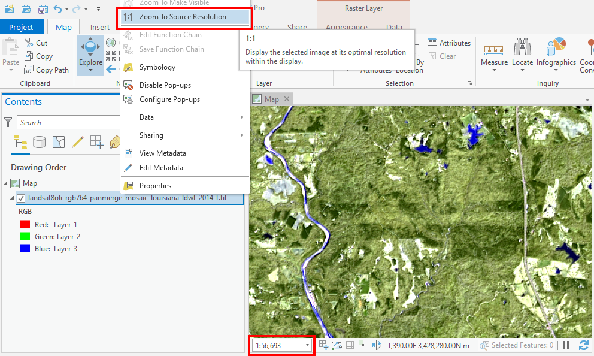 Figure 11. To determine the maximum zoom level appropriate for a tile cache, view the image in GIS software at the source resolution and note the map scale.
Using the Landsat mosaic of Louisiana as an example, we can see the scale of 1:56,693. As shown in Figure 8, the next closest zoom level available in the ArcGIS scheme is zoom level 13, with a map scale of about 1:36,000. Therefore, I chose this level as the maximum zoom level. When users view this tile layer on a map, they will be able to zoom in a little closer than the source resolution, meaning they will start to see pixels, but it does not look too terrible.
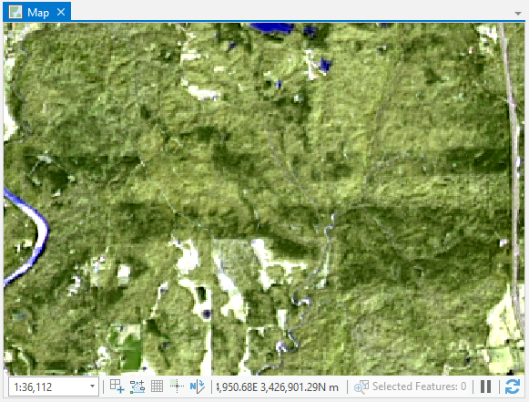 Figure 12. This map view shows a Landsat image zoomed in past its source resolution to give a preview of what users will see if we generate tiles down to zoom level 13 in ArcGIS (approx. 1:36,000 map scale).
Vector tiles
The lesson mainly covers the use of tiles for satellite or aerial imagery, but it is worth noting that vector layers of points, lines, and polygons can also be tiled. However, there is a more efficient way of tiling vector data that is very different from the method described above. Vector tiles break up point, line, and polygon features into small packages that can be drawn and styled by the client at different scales. Where an image tile cache has tiles of a uniform size like 256x256 pixels, the size of vector tiles is not a fixed dimension of pixels but instead is determined by the complexity of the geometry at a location on the map.
For example, a vector tile layer will yield a lot of little packages for complex urban areas and fewer packages in rural areas.
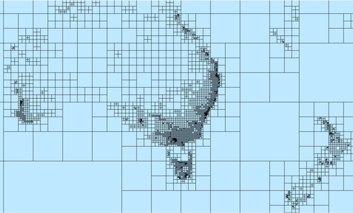 Figure 13. In contrast to the fixed grid of an image tile layer, the size of a vector tile is determined by the complexity of the geometry of the features in the area. A navigation map of Australia and New Zealand, for example, would have fewer tiles to load in less populated places. Image source: ArcGIS documentation.
Vector tiles are not supported in some older software such as ArcMap or the older version of ArcGIS Collector. If your maps don’t need to support old software, then you should almost always use vector tiles instead of raster tiles for point, line, and polygon data (if you tile the data at all). Imagery must still use raster tiles.
You might even consider using a vector tile layer instead of a regular feature layer if your dataset is large or complex, such as a nationwide road network. Though, like regular image tile layers, vector tile layers cannot be used as input in ArcGIS Online analysis tools.
As for computing power and storage, vector tiles have an incredible advantage. A tiling job that might take hours or days to generate image tiles could be completed in minutes with vector tiles, and the storage requirements are only a fraction of the image tile equivalent.
Summary
This lesson covered the concept of map tiling, a technique widely used in Web GIS to facilitate the viewing of large map layers, especially imagery basemaps. Most of the websites and apps you use involving maps probably employ map tiles in some way.
The file sizes of imagery datasets are too large to expect clients to download on a web map, so they have to be broken up. Map tiles serve this purpose and allow clients to only download the tiles of the area they are viewing at a specific zoom level.
Map tiles can be made with GIS software or programs dedicated to tiling. These programs take a large image, or a mosaic of multiple images, and break them up into a set of square tiles called a tile cache. The cache can be published as a web service that web map client applications can then request and display on screen for the user.
The concept of map tiling is not limited to imagery. Vector tiles can be created from point, line, and polygon datasets that are too large to feasibly include in a web map.
Appendix
Have a look at a tile cache and zoomable “map” of a different kind of imagery: a mosaic of the Orion Nebula taken by the Hubble Space Telescope. I generated this tile layer from a 324-megapixel image (18,000 x 18,000 pixels). Original image source: NASA, ESA.
The one and only tile from the lowest zoom level (0), showing the entire mosaic, plus some whitespace:

One of the 5,041 tiles from the highest zoom level (7), showing the greatest level of detail:

← Back to Lessons